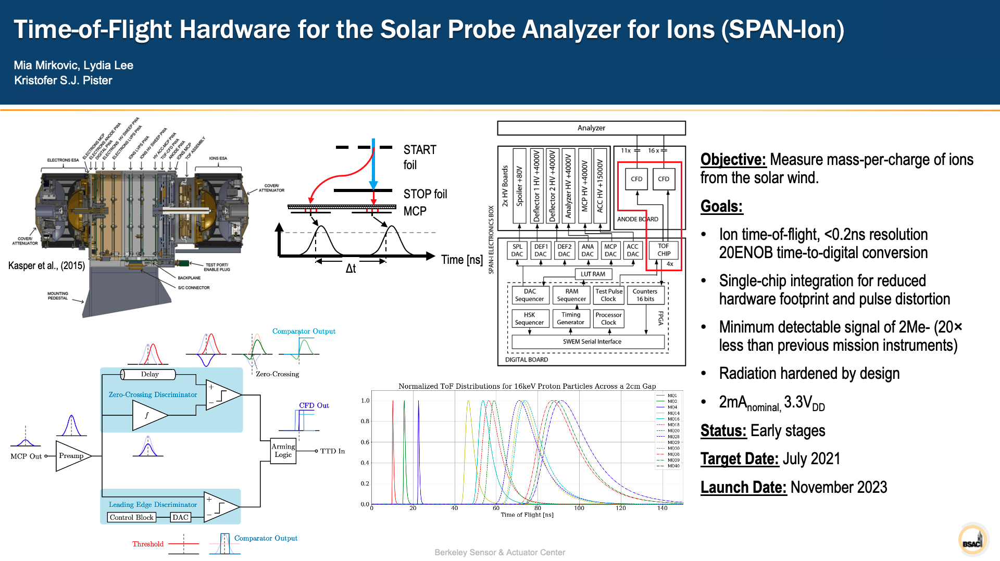

Download my cv (pdf) here.
My research interests center around integrated circuits for sensing applications. I've been doing research in space and planetary sciences for four years in two different labs at UC Berkeley in collaboration with NASA and Berkeley's Space Sciences Lab. I'm currently a temporary researcher at BSAC working on time-of-flight hardware for the Solar Probe Analyzer for Ions (SPAN-Ion) in collaboration with SSL. In the future, I'm also interested in working on implantable sensors for medical imaging and (neurological) disease research and diagnosis.
Time-of-Flight Hardware for the Solar Probe Analyzer for Ions (SPAN-Ion)
Berkeley Sensor and Actuator Center
SPAN-Ion is a successor to SPAN-I, the solar probe analyzer for ions on NASA's Parker Solar Probe, which is an electrostatic analyzer that measures the energy per charge of ions in the solar wind by measuring the ions' time of flight between a pair of carbon foils: secondary electrons from the foils are accelerated by an optical system toward the microchannel plate detectors, which output electron clouds to be collected by the anodes below them. The anodes then pass the electrons into a constant-fraction discriminator on the time-of-flight (TOF) chip. Though the TOF IC itself is not high-voltage, it is part of a system which includes several high-voltage boards, so high-voltage isolation, radiation hardening (by design), and robustness to temperature changes are important considerations in the design of the TOF IC. My contributions are centered around the analog front-end signal conditioning circuitry and power management, as well as signal modeling.

Image: Sep. 2020
Design, simulation, and modeling were performed using Cadence Virtuoso, BAG2, and python.
Journal Publications
Posters
Miscellaneous Reports